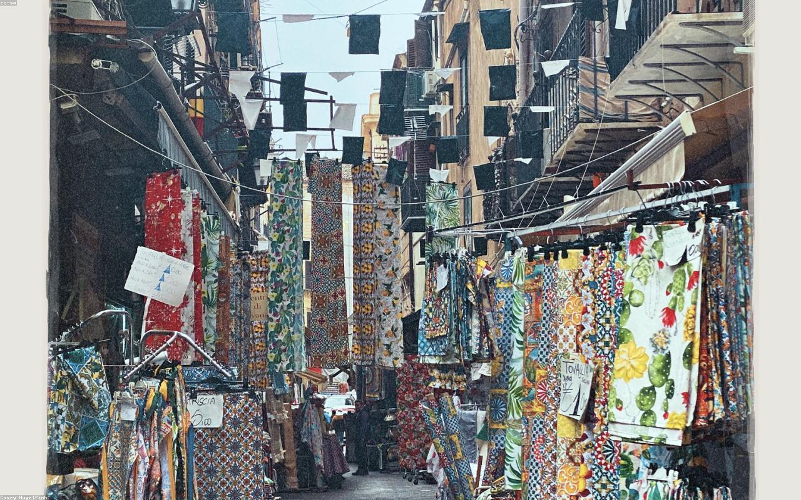
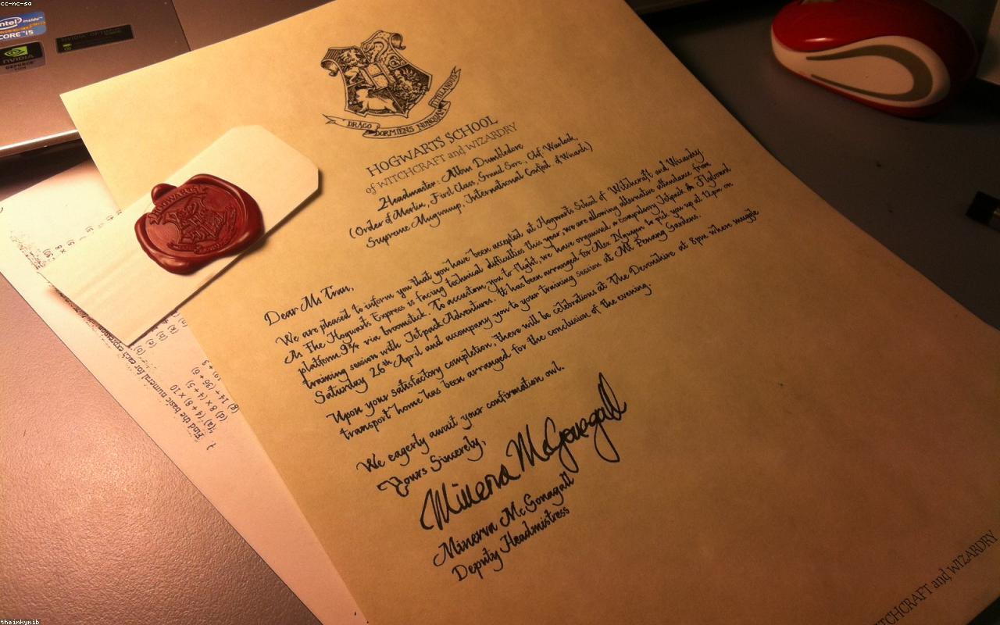
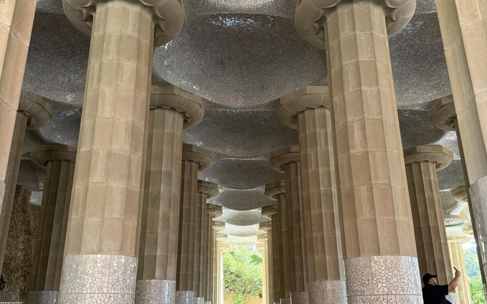

Compravendita immobili
Case, terreni, permute: ogni atto ha il suo controllo.
Studio notarile · Frascati
Studio in Via Bezzecca 2, a Frascati. 4.7 su 5 su Google, da 11 recensioni. Alessandro Squillaci, notaio dal 2002. Si riceve dal lunedì al venerdì, dalle 9 alle 19.
Dal 2002
22anni di atti
4.7su 5 — 11 recensioni Google
Oltre
130+follower su LinkedIn
Quattro aree in cui uno studio con 22 anni di atti fa la differenza. Prima si capisce, poi si firma.
Case, terreni, permute: ogni atto ha il suo controllo.
Si chiude un capitolo, si apre il prossimo: con ordine.
Dalla costituzione alle cessioni: la vita dell'azienda, firmata.
Separazioni e accordi: si scrive, si firma, si va avanti.

Alessandro Squillaci è notaio dal 2002. Per più di vent'anni le firme più importanti di Frascati sono passate da Via Bezzecca 2: case, aziende, successioni — con lo stesso metodo: prima si capisce, poi si firma. Il voto che vedete qui sopra lo mettono i clienti, uno per uno: 4.7 su 5, 11 recensioni Google.
Chiama per un appuntamentoLibrerie, sigilli e architetture del borgo: l'ambiente in cui si firmano gli atti.


Risponde lo studio, dal lunedì al venerdì.
Aperto ora — chiudiamo alle 19:00
Studio Notarile Squillaci| Lunedì | 09:00 – 19:00 |
| Martedì | 09:00 – 19:00 |
| Mercoledì | 09:00 – 19:00 |
| Giovedì | 09:00 – 19:00 |
| Venerdì | 09:00 – 19:00 |
| Sabato | Chiuso |
| Domenica | Chiuso |
Chiama per confermare la disponibilità.